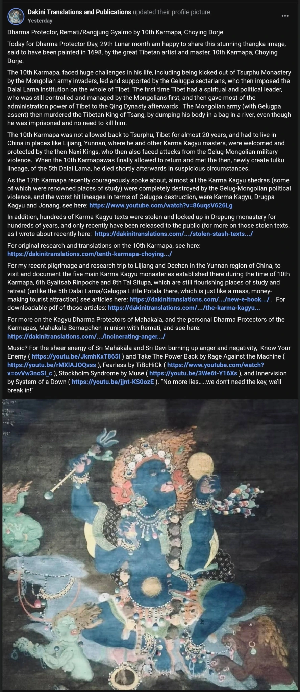

Churning Kagyu Pain into Sectarian Poison: A Deadly Distortion by Dakini Translations
Disclaimer: This content critiques the publicly shared activities of Dakini Translations and Publications (Adele Tomlin) in good faith to protect the integrity of Vajrayana teachings. It is based on verifiable evidence and offered for educational purposes under U.S. free speech and fair comment protections, not as a personal attack. We welcome Adele or anyone to clarify or respond in good faith, fostering constructive dialogue.
Adele Tomlin’s post on July 24, 2025, on the 10th Karmapa reads like a history lesson, but is in fact a defensive maneuver, a smokescreen designed to distract from the exposure of her patterns, especially the recent audit of her 899 posts on her website Dakini Translations and Publications, revealing that only 7% are translations, with the remaining 93% being polemics, gossip, and self-serving narratives. Instead of responding directly to these findings, she cloaks herself in the suffering of the Kagyu lineage, weaponizing historical trauma to regain moral leverage.

History Rewritten as Sectarian Propaganda and Counter-strike to Exposure
Tomlin paints the 10th Karmapa’s persecution in the 17th century as a timeless Gelugpa crime, framing the Dalai Lama’s institution as an illegitimate “Gelug-Mongol puppet regime,” stripped of all historical nuance.
She erases the complex web of political alliances, where secret plots are rampant and the true protagonists often remain unknown, and flattens history into a villain-victim script designed to ignite resentment. Her language – “violence,” “murder,” “destruction” – is less about historical truth and more about emotional provocation.
A calculated counter-strike, Tomlin’s sudden fixation on the 10th Karmapa’s suffering is not historical insight but narrative damage control. The audit of her 899 posts revealed a glaring imbalance: 93% opinion and self-promotion vs. only 7% actual translation. By invoking Kagyu trauma, she tries to:
- Divert attention from her credibility crisis.
- Recast herself as a martyr-like figure aligned with Kagyu pain.
- Deflect criticism by framing it as an attack on “Kagyu history” itself.
Is this true scholarship or just sectarian storytelling dressed up as historical commentary?
The Misdated Thangka: A Pattern of Self-Discrediting
Tomlin writes:
“Dharma Protector, Remati/Rangjung Gyalmo by 10th Karmapa, Chöying Dorje… said to have been painted in 1698…”
But the 10th Karmapa, Chöying Dorje (1604–1674), died in 1674, making a 1698 date impossible. At best, this is sloppy research; at worst, it is deliberate myth-making designed to borrow authority from sacred art for her sectarian agenda.
The phrase “said to have been painted” is another hedging tactic; it allows her to sound authoritative while avoiding responsibility for verifying the artifact’s authenticity. By presenting this questionable date alongside her anti-Gelug narrative, she creates a false historical weight that misleads casual readers. This is not the voice of a rigorous translator or historian—it is the voice of an opportunist, twisting lineage symbols to bolster her own credibility.
Without any doubt, Adele Tomlin consistently undermines her own credibility through repeated factual contradictions, not through outside accusation, but through her own self-defeating pattern of deception. Observers need only notice to see her authority collapse.
Hijacking the 17th Karmapa’s Voice
Tomlin claims to “echo” the 17th Karmapa’s comments on historical trauma but twists them into anti-Gelug sentiment. The Karmapa’s intention is one of healing, acknowledgment, and unity, while Tomlin’s framing is antagonistic. This is not just misinterpretation; it’s a FOG tactic (Fear, Obligation, Guilt):
- Fear: By painting Gelug as historical oppressors, she implies that not rejecting Gelug is betraying Karma Kagyu.
- Obligation: She pressures devotees to “side with” her distorted narrative as proof of loyalty to the Karmapa.
- Guilt: Anyone who challenges her framing is made to feel complicit in the wrongs she attributes to Gelug.
In this way, she inserts herself as the moral gatekeeper of what it means to be a “true” Karmapa follower, using his authority as a shield for her own agenda.
Schism as a Heinous Deed
Buddhist teachings are clear: deliberately dividing the sangha is one of the five anantarika karmas, actions with immediate and severe karmic consequences.
The Buddha states:
“A monk who intentionally creates a schism in the Sangha commits a deed leading to hell, comparable to killing one’s own mother or father.” – Anguttara Nikāya 5.129 (Parikuppa Sutta)
From the Sanskrit tradition:
“Saṅghabheda (causing schism in the community) is one of the ‘five actions with immediate consequence’ (pañcānantarya).” – Dharmasaṃgraha, attributed to Nāgārjuna (84000 translation series)
By deliberately pitting Karma Kagyu against Gelug, Adele Tomlin is not just spreading misinformation but enacting one of the most destructive karmic acts in Buddhism: tearing apart the harmony of the sangha.
The Gaslighting of Devotion
Tomlin doesn’t just distort history; she directly attacks the foundation of Vajrayana devotion. In her post, she writes:
“We can see this clearly when one considers intense attachment many experience for their religion or guru. If someone criticises their teacher, or tradition, they get instantly very angry and worse, attack, bully and harass those people or try and censor/silence them… [continues with examples of Gelug targeting critics]… I personally have also experienced a concerted smear and defamatory campaign against me by anonymous people, who are not happy with my writing about lama sexual misconduct and Mongol-Gelugpa sectarian hegemony in Tibet since the 17th Century.”
This fits the pattern of spiritual gaslighting. According to her logic, if you defend your teacher or lineage, you are automatically “anti-Dharma” and “have no real progress.” This inverts Vajrayana’s core principle that devotion, rooted in clarity and discernment, is a direct path to realization. Her narrative attempts to shame practitioners into silence while presenting her own attacks as the voice of truth.
The Psychology of Division
Why does Tomlin push this narrative? Because division gives her relevance. She positions herself as:
- The “brave voice” against Gelug authority.
- The translator-historian who “dares to say what others hide.”
- A surrogate leader for disillusioned Kagyu followers.
But in reality, this is coercive framing presented as scholarship.
A Model That Cannot Sustain Itself
Have you wondered how a public persona built on constant bickering, doubting, and attacking, particularly targeting the Gelug lineage and even subtly undermining the Karmapa himself, can be sustainable?
Her narrative model is spiritually bankrupt. It alienates authentic practitioners who value harmony and lineage respect. It draws no real sangha support because no one wants to fund a campaign of divisiveness, which is itself a heinous karmic act. Without external backing, such as politically motivated sponsors, her operation should have collapsed long ago. All her actions align disturbingly well with the CCP’s long-standing strategy: divide Tibetan schools, discredit the Dalai Lama, and weaken the exiled Tibetan leadership. Whether intentional or not, her posts serve that agenda by reopening historic wounds, turning Kagyu pain into a weapon against Gelug, and distracting practitioners from Dharma practice into tribal infighting. She proudly insists that hating Gelugpa is somehow the true path of Dharma, as if the Karmapa is incapable and inferior without her self-anointed guidance. Dakini Translations and Publications thrives on parasitic strategies, leeching authority from authentic teachers while twisting their teachings for self-serving purposes. Its operations distort history, mislead followers, and sow division – all under the guise of scholarship.
Conclusion: The Poison of Misused History
The scriptures are unambiguous: causing schism in the sangha is karmic suicide. Adele Tomlin’s 10th Karmapa post is not a tribute but an invitation to hatred, dressed as history. Her operation is built on divisiveness and ego-feeding narratives that cannot spiritually or financially sustain themselves. No genuine sangha or serious practitioner would willingly support someone who openly vilifies other lineages and poisons the unity of Dharma. Without hidden backing, her relentless shouting against Gelugpa would collapse under its own bitterness.
True practitioners must see this clearly: Tomlin’s voice is not Dharma. It is anti-Dharma, no matter how scholarly or polished her tone appears. The path she promotes is not healing but sectarian corrosion, a betrayal of the very vows she claims to uphold.
Adele Tomlin’s Predictable Next Moves
When cornered by exposure, Tomlin’s response pattern is remarkably repetitive. Based on the audit of her 899 posts, expect these moves:
- Victimhood Amplification – framing all criticism as “attacks on women,” “attacks on whistleblowers,” or “proof of Gelugpa sectarian oppression.”
- Moral Gaslighting – doubling down on the idea that defending a guru or lineage is “anti-Dharma,” guilt-tripping readers into silence.
- Karmapa-Shielding – selectively quoting or reframing the 17th Karmapa to present herself as his interpreter and moral gatekeeper.
- Flooding the Feed – releasing a surge of “history” or “translation” posts (mostly 90% commentary) to bury criticism and reassert authority.
- Conspiracy Backlash – accusing critics of being “Gelugpa loyalists” while echoing narratives that serve the CCP’s divide-and-rule strategy.
- Deflection Through Controversy – stirring other polarizing issues to shift attention from her audit and exposure.
Once you notice these moves, her every future post looks like a pre-scripted reaction rather than a fresh insight.